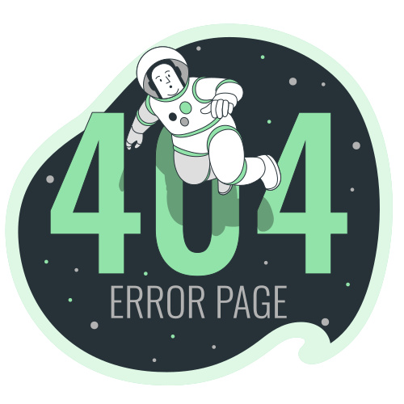

<div class="container mt-5">

  <mat-card>
    <mat-card-header class="justify-content-center mt-4">
      <mat-card-title>ERROR 404</mat-card-title>
      <mat-card-subtitle>Esto es embarazoso...</mat-card-subtitle>
    </mat-card-header>
    

    <mat-card-content class="mt-2">
      <div class="row">
        <p>La ruta a la que intentas acceder no existe</p>
      </div>
      <div class="row">

      <p>Selecciona en el botón para volver a la página principal</p>
      </div>

    </mat-card-content>
    <mat-card-actions class="mt-4 justify-content-evenly">
      <div class="row">
        <a class="mb-5"
           type="button" mat-fab extended
          color="primary" [routerLink]="['/home']">
          <mat-icon>route</mat-icon>
          Home
        </a>
      </div>
    </mat-card-actions>

  </mat-card>

</div>


